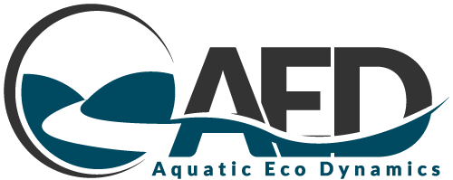

Welcome
Welcome to the Cockburn Sound Integrated Ecosystem Model (\(\mathbf{CSIEM}\)) information pages!
Project background
Cockburn Sound is a marine embayment in Western Australia that supports a wide range of environmental, cultural, social and economic values, whilst also being subject to sustained pressure from industrial development and a changing climate. Understanding how the Sound responds to these pressures — and identifying useful mitigation options — requires a tool able to link the physics, chemistry and biology of the system within a single, integrated framework.
The Cockburn Sound Integrated Ecosystem Model (CSIEM) was developed to meet this need as part of Project 1.2, Pathways to Productivity - Development of a water quality response model for Cockburn Sound, a project of the WAMSI Westport Marine Science Program (WWMSP). The model couples hydrodynamics, biogeochemistry and the essential ecosystem processes that govern water quality — oxygen, nutrients, sediment, algae and water clarity — together with the benthic communities, such as seagrass, that both shape and respond to them. In doing so it provides a vehicle to bring together the diversity of data collected across the WWMSP and over the preceding decades, and a basis for the integrated, cumulative assessment of management scenarios relevant to decision-making.
Understanding the “Pathways to Productivity” has been the central focus of the model development as management is challenged to strike the balance between promoting “healthy” ecosystem productivty (e.g., seagrass beds and fishery production), whilst also managing the risks of excessive or nuisance productivity (e.g. harmful algal blooms) and poor water quality (e.g. hypoxia, turbidity). To understand this the model has to integrate essential processes related to hydrodynamics, nutrient cycling, sediment biogeochemistry, light and primary productivity, and the dynamics of habitat-forming communities such as seagrass and filter feeders. The model is designed to be open and transparent, with the aim of fostering collaboration and knowledge sharing among researchers, stakeholders and decision-makers in our pursuit of developing this knowledge.
Document layout and guidance
This documentation is structured to allow a systematic description of CSIEM - the data used, the model description and results of performance using the model. The book is organised into two main parts that follow the logic of the modelling system. The Organisation part describes the platform itself — the data products that feed the model (data), how the model is configured and run (model), the analytics and visualisation toolkit used to assess it (marvl), and the integration of satellite observations (satellite). The larger Science Applications part then builds up through the system: from the physical drivers (weather and waves, ocean climatology, hydrodynamics) and external inputs (Swan River discharge, submarine groundwater discharge), through the biogeochemical core (sediment biogeochemistry and the integrated ecosystem model assembly), to the emergent ecosystem responses (water quality, bio-optical conditions, benthic communities and seagrass habitat) and climate stressors such as marine heatwaves. A set of appendices provides the supporting data catalogue and configuration detail. This progression mirrors the way the model itself was assembled — establishing the physical foundation first, then layering on biogeochemistry, and finally the ecological and habitat responses.
Adding and updating content
The intent of the CSIEM Manual is that the model - and its documentation - can continually be updated; thus the correction, improvement and addition of material is encouraged. This online book is therefore open-source and interested stakeholders can comment, raise issues, and further develop content.
This CSIEM documentation is available via GitHub and prepared in “R Mark Down” language. This is an implementation of mark down that can integrate with the R environment for enabling interactive content.
To access and edit the manual you can download the csiem-science repository and work with the R project file in RStudio.
Using RStudio’s visual editor
If you’re unfamiliar with writing .Rmd and .md files, the RStudio IDE 1.4 release implements a visual markdown editor that minimises the need to learn most syntax. To use this feature, open a .Rmd or .md file and click the visual editor button in the top right-hand corner of the editor window. You will now see a live-rendered version of your document and the addition of numerous buttons/menus that provide a GUI for formatting. Standard word processing functionality, such as buttons to bold, italicise, and underline text are available, as well as shortcuts to features that can be more finicky in the basic source editor (e.g. citations, links, and simple tables). Returning to the source editor will reveal the formatting changes made are directly translated to the syntax of the raw file.
Citing this document
Please cite this online book in reports and scientific publications as:
Hipsey, M.R., Huang, P., Zhai, S., Paraska, D., Busch, B., Golder, R., Escuardo, S.G., Fearns, P., Davies, J., Bruce, L.C., Gunaratne, G. 2026. The Cockburn Sound Integrated Ecosystem Model (CSIEM). Prepared for the WAMSI Westport Marine Science Program. The University of Western Australia, Perth, Western Australia. https://doi.org/10.26182/tp2x-t920. Build version 1.7.0 16 June 2026.
Document version history
The model was built in a sequential process, through an initial rapid development phase followed by progressive refinement as new science from the WWMSP themes became available. The key development and review milestones for this documentation are summarised below.
| Milestone | Date |
|---|---|
| Draft documentation released for V1.6.0 | 01/11/2025 |
| Draft documentation released for V1.7.0 | 21/04/2026 |
| Review completed | 15/05/2026 |
| Submitted as revised draft | 16/06/2026 |
| Approved by the WWMSP Science Program Leadership Team | 20/06/2026 |
| Approved by WAMSI CEO | 20/06/2026 |
| Final Report | 20/06/2026 |
